How temporal flicker creates spatial patterns below onset
Spatially uniform flicker can evoke geometric visual patterns.
One proposed mechanism is pattern formation in cortical activity.
We ask when a weak input creates a pattern that the input itself does not contain.
Motivation and a modeling question. V1 pattern formation is a proposed mechanism, not an established explanation of all hallucinations. Rule, Stoffregen & Ermentrout, PLoS Comput. Biol. 7, e1002158 (2011), doi:10.1371/journal.pcbi.1002158
→
uniform in space, periodic in time
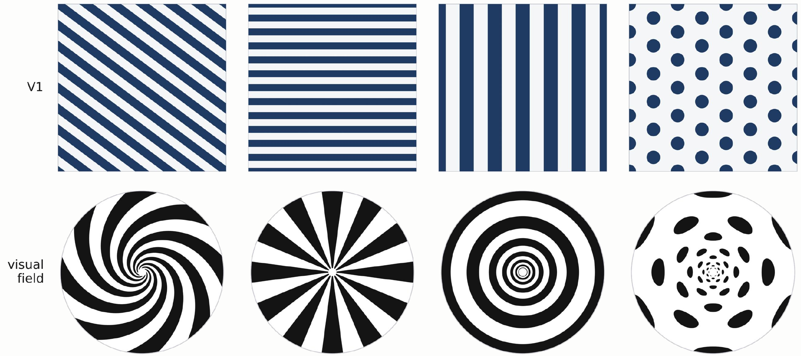
Top: patterns in V1 coordinates. Bottom: the same patterns mapped to the visual field (earlier talk).
Model
Wilson–Cowan neural fields
$$D_\tau\,\partial_tu=-u+W*F(u)+I(x,t)$$
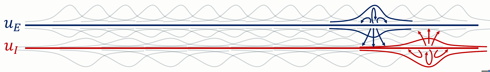
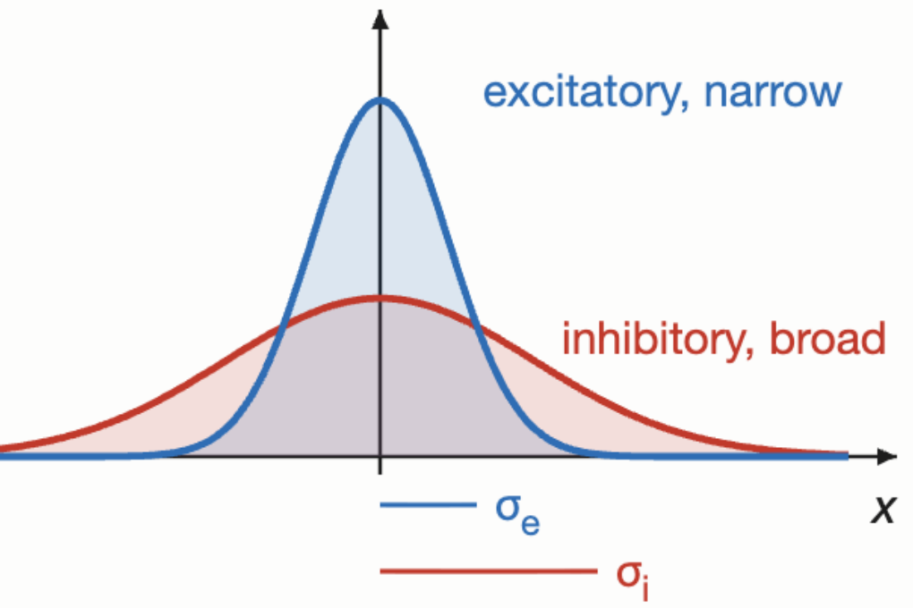
E–I picture and kernels from the earlier talk. The report's two-population example has $\Sigma_{EE}=\Sigma_{IE}=8$ and $\Sigma_{EI}=\Sigma_{II}=32$ (source E is narrow, source I is broad).
The model describes interacting excitatory and inhibitory populations.
Activity changes through decay, spatial coupling, and external input.
Coupling strengths and spatial ranges decide which modes grow.
Symbols
$u=(u_E,u_I)^\mathsf T$ holds the population activities.
$D_\tau=\operatorname{diag}(\tau_E,\tau_I)$ holds the time constants.
$W$ holds Gaussian kernels with gains $J$ and variances $\Sigma$. Rows index targets.
$F$ is the activation function, $I$ is the input, and $*$ is spatial convolution.
Convention. The report uses $W*F(u)$. The earlier slides used $F(W*u)$. The two forms give different nonlinear coefficients.
report Sec. 8.1, eqs. (population-field), (population-kernels), (wc-parameters)
Model
A general model near the homogeneous state
Expand around the homogeneous state, which we write as $u=0$:
linear: $\cL(p)=\cL_0+p\,\cL_1+O(p^2)$ gives growth and decay of each mode.
quadratic, cubic: symmetric multilinear maps; the interactions between modes.
$p$: distance from the unforced onset. $\kappa$ is the gain parameter, $\kappa_c$ its onset value.
scope: the same form covers two-population and multi-population neural fields. For the field of slide 2 the input term is $D_\tau^{-1}I$.
The reduction depends only on the critical modes and the nonlinear interactions. It does not depend on the number of populations.
report Sec. 1, eq. (pde); Sec. 8.1, eq. (population-nonlinear-symbols)
Model · linear analysis
Onset selects a spatial and a temporal scale
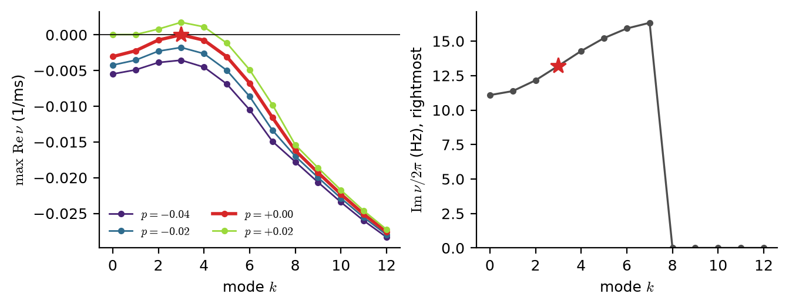
V1-inspired model, $L=43$. Left: $\max\RePart\nu$ per mode for $p=\kappa-\kappa_c$ near 0. Right: $\ImPart\nu/2\pi$ of the rightmost eigenvalue at onset. Star: $k_0=3$.
$$\nu(\pm k_0,0)=\ii\omega_0$$
Each Fourier mode $\ee^{\ii hx}$ gives a matrix $M(h)$. Its eigenvalues are $\nu$.
$\RePart\nu$ gives growth or decay. $\ImPart\nu$ gives the oscillation frequency.
At onset the critical modes have indices $\pm k_0$ and frequency $\omega_0$.
On a domain of length $L$, the physical wavenumber is $q_0=2\pi k_0/L$. The proof slides use $L=2\pi$.
Assumptions
The critical eigenvalue is simple in each Fourier block, at the reflection pair $\pm k_0$.
All other modes are strictly stable (stronger than report Sec. 1.1, which asks only for nonzero eigenvalues). The pair crosses transversely: $\RePart\alpha>0$, $\alpha=\partial_p\nu(k_0,0)$.
The quadratic resolvents exist: $2\ii\omega_0I-M_0(h)$ and $M_0(h)$ are invertible for $h\in\{0,\pm2k_0\}$.
$$\cD w=f\quad\Longleftrightarrow\quad\ip{V}{f}=0\quad\text{for every }V\in\ker\cD^*$$
$\ker\cD^*=\operatorname{span}_\RR\{\Psi E_\pm,\ \overline\Psi\,\overline E_\pm\}$, with $E_\pm=\ee^{\ii(\omega_0s\pm k_0x)}$ and $\Psi^*\Phi=1$.
Symbols
$\Phi$ is the critical population eigenvector, $\lVert\Phi\rVert_2=1$. $\Psi$ is the adjoint eigenvector.
$A$ and $B$ are complex amplitudes of two waves that travel in opposite directions.
$\ip{\cdot}{\cdot}$ is the space–time inner product over one period $T_0=2\pi/\omega_0$ and one domain length.
$\cD^*=-\partial_s-\cL_0^*$ is the adjoint operator.
Why the condition holds (sketch)
In Fourier variables $\cD$ is a direct sum of blocks $\ii\Omega I-M_0(h)$. Only the critical blocks are singular.
If the inverses of the noncritical blocks are uniformly bounded, $\cD$ has closed range and a bounded inverse on the noncritical complement. The Fredholm alternative gives $\operatorname{Ran}\cD=(\ker\cD^*)^\perp$.
Change from the earlier talk. "No waves of natural frequencies in the range" becomes "orthogonal to the adjoint critical modes".
Third order. The input response meets one critical wave. Frequencies and indices must add up to a critical wave $(\omega_0,k_0)$:
input
resonant interaction
temporal flicker
$(2\omega_0,0)+(-\omega_0,k_0)=(\omega_0,k_0)$
static spatial input
$(0,2k_0)+(\omega_0,-k_0)=(\omega_0,k_0)$
$\alpha=\partial_p\nu(k_0,0)=\Psi^*M_1\Phi$, with $\RePart\alpha>0$.
$F_2$ is the order-$\epsilon^2$ input. Its response is $u_2^F=R(2\omega_0,0)P\,\ee^{2\ii\omega_0s}+\cc$, with $R(\Omega,h)=(\ii\Omega I-M_0(h))^{-1}$.
An input at order $\epsilon$ would enter $\cD u_1$, so the input would set the leading pattern. Order $\epsilon^2$ lets the input act only through $2\cQ(u_1,u_2)$ at order $\epsilon^3$.
Result. Temporal input at $2\omega_0$ and static spatial input at $2k_0$ give resonant coupling at this order.
Scope. This holds for order-$\epsilon^2$ input and the cubic reduction. It does not exclude near-resonant detuning or other input scalings (report Sec. 9).
report Sec. 2.3, eq. (three-orders); Sec. 4.1, eq. (p1-zero); Sec. 5.2, eqs. (temporal-critical-A)–(spatial-critical-B); earlier talk pp. 13–19
Derivation · III
Proof III: projection gives the amplitude equations
Apply the same Fredholm condition at order $\epsilon^3$: $\ip{\Psi E_\pm}{\text{right-hand side}}=0$.
saturation: $b$ is the self-interaction; $c$ couples the two waves.
flicker: $\eta_t=2\Psi^*\cQ(\overline\Phi,R(2\omega_0,0)P)$ couples $A$ to $\overline B$.
static input: $\eta_x=2\Psi^*\cQ(\Phi,R(0,2k_0)S)$ for a reflection-symmetric (real) $S$.
Solvability decides how the critical amplitudes evolve. Flicker links each wave to the conjugate of the opposite wave, so it can lock a standing pattern.
report Sec. 5.3, eqs. (abc), (full-solvability); Sec. 6, eq. (amplitude); earlier talk p. 20
Result
A standing pattern exists below onset proved
Pure flicker: $\eta_x=0$. The subspace $A=B=z$ is invariant:
Let $f(\rho)=|a+\gamma\rho|^2-|\eta_t|^2$ with $\gamma=b+c\neq0$.
The leading coefficient $|\gamma|^2$ is positive. If $|\eta_t|>|a|$, the constant term $|a|^2-|\eta_t|^2$ is negative.
So $f$ has exactly one positive root $\rho_*$. The phase $\phi_*$ follows from $\ee^{-2\ii\phi_*}=-(a+\gamma\rho_*)/\eta_t$, which has modulus 1.
Stability: write $v_\pm=\tfrac12\ee^{-\ii\phi_*}(\delta A\pm\delta B)$. The linearization splits into two real $2\times2$ blocks.
With $\RePart a<0$: $\RePart(b+c)<0$ makes the symmetric block stable, and $\RePart b<0$ makes the antisymmetric block stable, apart from the zero eigenvalue of translation.
Scope. Proven for the amplitude system. The report does not prove that the pattern persists in the full field.
report Sec. 6.1, Proposition 1, eqs. (standing-reduction)–(stable-temporal-pattern)
V1-inspired model
A V1-inspired population model
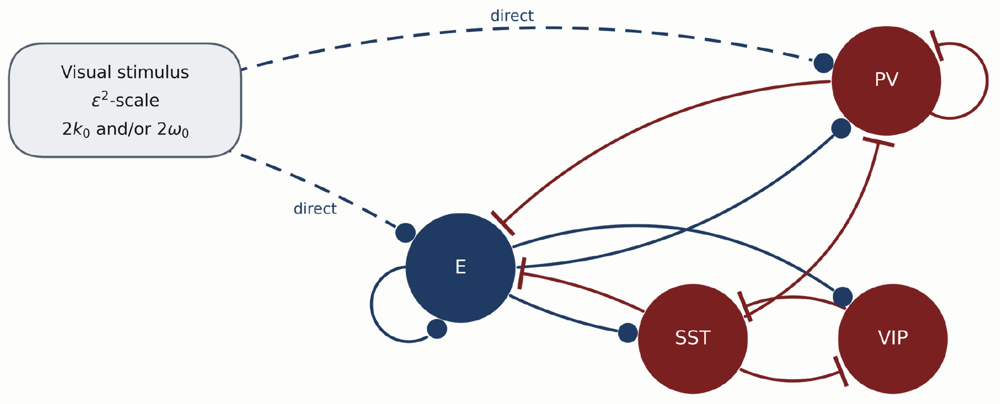
Network motif (earlier talk). Visual input reaches E and PV.
The theorem compares the diagonal widths; in V1 they fail it, $\Sigma_{EE}=0.6498<\Sigma_{PV,PV}=0.72$. With more populations, one oscillatory pair can cross while the other eigenvalues keep the total trace negative: in V1, $\tr M(q_0)=-0.041$ at onset numerical.
Proof
Write $\beta_E=J_{EE}F'_E/\tau_E>0$ and $\beta_I=|J_{II}|F'_I/\tau_I\ge0$. Then
$$\tr M(q)=\beta_E\ee^{-\Sigma_{EE}q^2/2}-\beta_I\ee^{-\Sigma_{II}q^2/2}-\tfrac1{\tau_E}-\tfrac1{\tau_I}.$$
$\Sigma_{EE}\ge\Sigma_{II}$ gives $\ee^{-\Sigma_{EE}q^2/2}\le\ee^{-\Sigma_{II}q^2/2}$, so $\tr M(q)\le(\beta_E-\beta_I)\ee^{-\Sigma_{II}q^2/2}-\tfrac1{\tau_E}-\tfrac1{\tau_I}$.
If $\beta_E\le\beta_I$, the bound is negative. If $\beta_E>\beta_I$, the bound is at most $\tr M(0)$, and $\tr M(0)<0$ because $q=0$ is stable. (Only $\tr M(0)<0$ is used.)
So $\RePart\nu(q)<0$ for every oscillatory pair at every $q$.
Qualifications
In V1, excitation is not broader than every inhibitory connection.
The restriction does not exclude stationary instabilities or forced patterns.
Target-specific comparisons differ from an ordering of widths by source.
slide_outline.md §11 and review notes (referee-checked); skeptic: 6588 stable random instances, no counterexample; report eqs. (dispersion-matrix), (v1-width-matrices). Not yet in the report.
Simulations · 1D
1D simulations agree with the predicted amplitude numerical
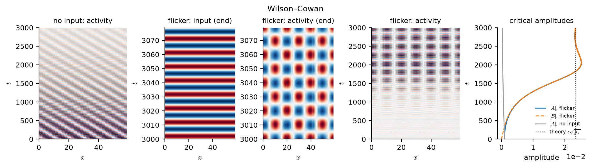
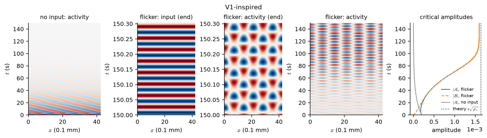
E activity, $\mu=-1$, uniform flicker at $2\omega_0$ from the same initial state. Dotted line: $\epsilon\sqrt{\rho_*}$.
model
measured $\epsilon|A|$
predicted $\epsilon\sqrt{\rho_*}$
Wilson–Cowan
$0.02331$
$0.02345$
V1-inspired
$0.001594$
$0.001635$
The input is spatially uniform.
Without input, the seeded wave decays.
With flicker, the response holds the critical mode $k_0=3$, and $|A|=|B|$: a standing pattern.
The differences are about $0.6\%$ and $2.5\%$, consistent with an $O(\epsilon)$ correction. Each model was run at one $\epsilon$.
2D flicker: stability needs a check against other directions numerical
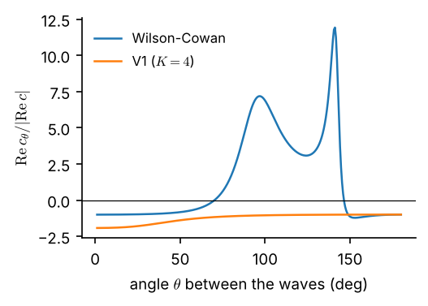
$\RePart c_\theta/|\RePart c|$ against the angle between two critical waves.
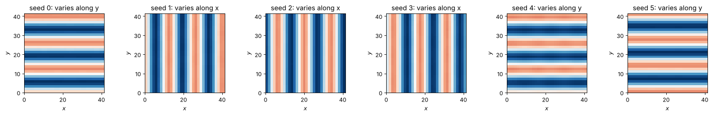
V1, uniform flicker, six random initial fields: six stripes (3 along $x$, 3 along $y$), no squares.
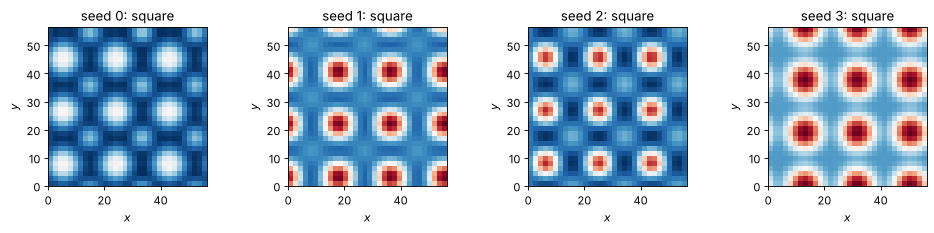
WC, same input: four seeds end as large squares ($\approx0.5$), beyond the weakly nonlinear range.
In 2D, many wavevectors share the critical wavelength: a shell.
Uniform flicker couples each wave to its opposite.
A standing stripe must also resist the waves in other directions.
$c_\theta$ is the cross coefficient of two critical waves at angle $\theta$.
test ($\mu=-1$)
model
field
theory
stripe amplitude
V1, $\epsilon=.025$
$0.00196$
$0.00204$
stripe $\lambda_\perp$
V1
$-0.024$
$-0.026$
stripe $\lambda_\perp$
WC, $\epsilon=.1$
$+1.77$
$+1.84$
square
V1
unstable, $+0.022$
square
WC
unstable, $+0.236$
V1: stripes resist transverse perturbations; the square is unstable.
Wilson–Cowan: both branches are unstable. $\RePart c_\theta>0$ for $71^\circ\lesssim\theta\lesssim146^\circ$.
A standing-wave solution need not be stable in the full critical shell. Stability needs the full linearization, not only the sign of $\RePart c_\theta$.
report Sec. 10.4–10.5, eq. (stripe-transverse), Fig. (cross-coupling), test table; Sec. 10.6; seed images: notebooks/{v1,wilson_cowan}_2d.ipynb
Simulations · 2D
Traveling input can create a pattern across its direction
V1, $\epsilon=0.025$, $\mu=-1$, shell $|\bk|^2=10$ ($L=4.50$ mm). Input $\cos(\bK\cdot\boldsymbol x+2\omega_0t)$, $\bK=(6,0)$, from a random field; 2 response periods after 80 s.
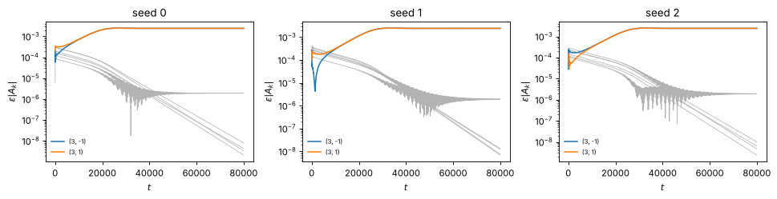
Three seeds: $(3,\pm1)$ grow to $0.00242$; all other shell waves decay below $2\times10^{-6}$.
$$\bk_X+\bk_Y=\bK$$
$\bK$ is the input wavevector. Vectors are in lattice-index units, on the oblique shell.
The input travels along $x$ and is uniform along $y$.
The response travels along $x$ and is a standing $\cos(q_1y)$ along $y$, with $\bd\perp\bK$, $|\bd|^2=q_0^2-|\bK|^2/4$.
V1: the pair persists. $\epsilon|A|=0.00242$ in all three seeds, theory $0.00254$.
The same input on the shell $|\bk|^2=25$ selects $(3,\pm4)$: $y$-mode 4. Field $0.00271$, theory $0.00289$.
Wilson–Cowan, started from small noise: the pair reaches $0.0264$ (theory $0.0270$). Then $(-1,\pm3)$ grow at $0.70$–$0.71$ per slow time in WC seeds 1–3 (largest Jacobian eigenvalue $0.84$), and the field leaves the weakly nonlinear range.
numerical Parameter-specific examples. V1 seeds 0–2 give the same selection (report Sec. 10.6).
report Sec. 10.1, 10.3, eqs. (wavevector-rule), (pair-geometry), (pair-field); test table, Sec. 10.6; notebooks/v1_2d.ipynb; theory/code/check_shell_growth_2d.py; slides/build/movie2d.py
Dispersion
Dispersion curves show opposite frequency trends
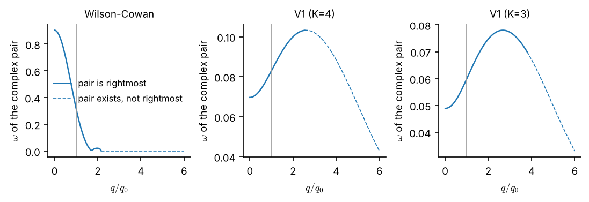
Frequency of the tracked complex pair at onset against $q/q_0$. Solid: the pair is the rightmost eigenvalue. Dashed: another eigenvalue lies to its right. Vertical line: $q_0$.